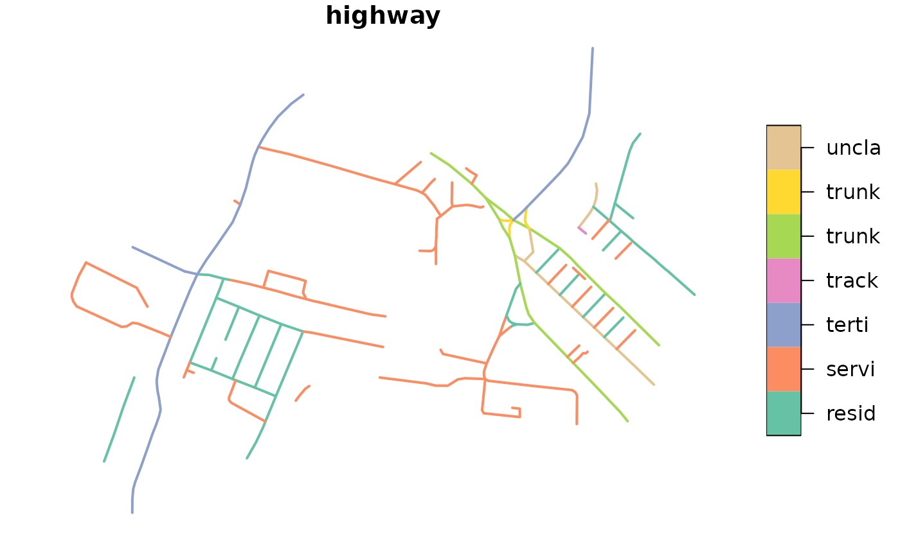

Import transport networks used by a specific mode of transport
Source:R/get-network.R
oe_get_network.RdThis function is a wrapper around oe_get() and can be used to import a road
network given a place and a mode of transport. Check the Details for a
precise description of the procedures used to filter the OSM ways according
to each each mode of transport.
Usage
oe_get_network(place, mode = c("cycling", "driving", "walking"), ...)Arguments
- place
Description of the geographical area that should be matched with a
.osm.pbffile. Can be either a length-1 character vector, ansf/sfc/bboxobject, or a numeric vector of coordinates with length 2. In the last case, it is assumed that the EPSG code is 4326 specified as c(LON, LAT), while you can use any CRS withsf/sfc/bboxobjects. See Details and Examples inoe_match().- mode
A character string of length one denoting the desired mode of transport. Can be abbreviated. Currently
cycling(the default),drivingandwalkingare supported.- ...
Additional arguments passed to
oe_get()such asboundaryorforce_download.
Details
The definition of usable transport network was taken from the Python packages osmnx and pyrosm and several other documents found online, i.e. https://wiki.openstreetmap.org/wiki/OSM_tags_for_routing/Access_restrictions, https://wiki.openstreetmap.org/wiki/Key:access. See also the discussion in https://github.com/ropensci/osmextract/issues/153.
The cycling mode of transport (i.e. the default value for mode
parameter) selects the OSM ways that meet the following conditions:
The
highwaytag is not missing;The
highwaytag is not equal toabandoned,bus_guideway,byway,construction,corridor,elevator,fixme,escalator,gallop,historic,no,planned,platform,proposed,racewayorsteps;The
highwaytag is not equal tomotorway,motorway_link,footway,bridlewayorpedestrianunless the tagbicycleis equal toyes,designated,permissiveordestination(see here for more details);The
accesstag is not equal toprivateorno;The
bicycletag is not equal tono,use_sidepath,private, orrestricted;The
servicetag does not contain the stringprivate(i.e.private,private_accessand similar);
The walking mode of transport selects the OSM ways that meet the
following conditions:
The
highwaytag is not missing;The
highwaytag is not equal toabandoned,bus_guideway,byway,construction,corridor,elevator,fixme,escalator,gallop,historic,no,planned,platform,proposed,raceway,motorwayormotorway_link;The
highwaytag is not equal tocyclewayunless thefoottag is equal toyes;The
accesstag is not equal toprivateorno;The
foottag is not equal tono,use_sidepath,private, orrestricted;The
servicetag does not contain the stringprivate(i.e.private,private_accessand similar).
The driving mode of transport selects the OSM ways that meet the
following conditions:
The
highwaytag is not missing;The
highwaytag is not equal toabandoned,bus_guideway,byway,construction,corridor,elevator,fixme,escalator,gallop,historic,no,planned,platform,proposed,cycleway,pedestrian,bridleway,path, orfootway;The
accesstag is not equal toprivateorno;The
servicetag does not contain the stringprivate(i.e.private,private_accessand similar).
Feel free to create a new issue in the github repo if you want to suggest modifications to the current filters or propose new values for alternative modes of transport.
Examples
# Copy the ITS file to tempdir() to make sure that the examples do not
# require internet connection. You can skip the next 4 lines (and start
# directly with oe_get_keys) when running the examples locally.
its_pbf = file.path(tempdir(), "test_its-example.osm.pbf")
file.copy(
from = system.file("its-example.osm.pbf", package = "osmextract"),
to = its_pbf,
overwrite = TRUE
)
#> [1] TRUE
# default value returned by OSM
its = oe_get(
"ITS Leeds", quiet = TRUE, download_directory = tempdir()
)
plot(its["highway"], lwd = 2, key.pos = 4, key.width = lcm(2.75))
# walking mode of transport
its_walking = oe_get_network(
"ITS Leeds", mode = "walking",
download_directory = tempdir(), quiet = TRUE
)
plot(its_walking["highway"], lwd = 2, key.pos = 4, key.width = lcm(2.75))
# driving mode of transport
its_driving = oe_get_network(
"ITS Leeds", mode = "driving",
download_directory = tempdir(), quiet = TRUE
)
plot(its_driving["highway"], lwd = 2, key.pos = 4, key.width = lcm(2.75))

# Remove .pbf and .gpkg files in tempdir
oe_clean(tempdir())